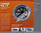

Experience
Hearst Corporation
Front-end Developer/Producer
August 2014 - present
Maintained and built websites using HTML 4/5, CSS 2/3, LESS CSS, JavaScript/Jquery with some Smarty/PHP. Using Hearst Newspapers' custom CMS to format and publish a wide range of responsive content onto mobile devices and desktop browsers. Working in an Agile method to produce quick and regular releases adding new features and fixing bugs. Worked in a large distributed team via scrums/sprints and team-communication tools. (Jira, HipChat/IM).
www.hearst.com
More Details
- Built the front-end components and helped plan, produce and test the SSO/single-sign-on system for the HoustonChronicle market websites (using Janrain). Reviewed additional SSO providers for other projects.
- Maintained the front-end styles, scripts, and markup for several large websites on multiple platforms (mobile and desktop) including third-party products and content.
- Worked with Design and UI/UX to achieve their goals, and to refactor designs and wireframes to meet real-world requirements as solutions are developed.
- Regular release cycles achieved through daily scrums and sprints (Agile).
Penton Media Inc.
Tech Producer/Jr. Developer
2007 - August 2014
Built and maintained the Pisces primary CMS for Penton’s 80+ magazine websites using Drupal. Built websites and content for Penton as well as expanded platform components for social media, community experiences, and expert networks. Maintained a central code-base and CSS framework for fast and efficient deployments using Agile methodologies. Tracked tasks from the planning and development stages into the release and post-deployment process. Used strict QA and testing strategies in tune with regular deployment schedules.
www.penton.com
More Details
- Created Adaptive/Responsive sites using HTML 4/5 and CSS 2/3 with a "Mobile First" strategy.
- Built a custom CSS framework to manage many sites on one central codebase (CSS 2/3, SASS/LESS preprocessors).
- Semantic and accessible code, code reviews and regular testing cycles built into every project.
- Worked with Design to achieve better UI/UX for all user experiences across many sites (Live prototyping, Interactive wireframes).
- Helped convert print-focused magazines to a digital strategy to improve revenue at Penton.
Prism B2B
Technical Producer
2004 - 2007
Built magazine websites and performed total redesigns for 120+ magazines using HTML 4/5, CSS 2/3, Javascript and Jquery. Helped produce and build a custom WordPress application called “Ask the Experts”. Managed the “Help Desk” for magazine websites and ticketed issues. Supported Penton’s editorial staff in producing web content and deploying third-party materials including micro-sites and special promotions.
More Details
- Managed company-wide website "Help Desk" to support Prism's online products.
- Built the "Ask the Experts" product in WordPress, converting it into an "Expert Community" tool that sold very well in the Agriculture and Trades sectors of Prism's B2B Magazines.
- Built micro-sites and special promotions as well as optimizing and deploying third-party widgets and content.
- Newsletter production.
Freelance - New York/Washington, D.C.
Producer/Web Developer/Sound Designer
2002 - 2005
Built and Designed websites for global corporations, clothing design firms, museums and artists using HTML 4/5, CSS 2/3, Javascript/JQuery, and Flash from Photoshop/Illustrator designs. Customized WordPress to make websites and web applications. Managed projects and client relationships. Performed sound design, recording, and audio production. Projects include The World Bank, Singer Corporation, ART.net, WW Norton publishers, Behavior.com, and others.
More Details
- Singer Corporation - A total redesign and rebranding of the Singer Corporation's online presence in preparation for sale. Designed and help build a custom CMS, performed consultaion, production, and project management.
- Artnet.com - Working with a designer, we produced HTML and graphics for an inner-page redesign (collection and individual art-piece pages), performed consulting and project management.
- Working for the small agency NextText.us, maintained and updated the Athena Aviation website, including existing flash movies, templates and graphics.
- Redesigned and produced the Howard Schwartz Recording (HSR) website including custom CMS elements, graphics and consulting.
- Worked with Behavior.com to build and update HTML for their clients Expedia.com and CNN.com.
- Recorded and produced a promotional audio interview of the author Irvine Welsh for The W.W. Norton & Company publisher.
- Built a multi-language series of websites for the international Midge Master pest control company. Used unicode text format to handle a wide variety of language character options.
- Lunar Pilot: built the main website as well as the Ecommerce side of this MS Flight Simulator Add-on company spcializing in flight simulators of the NASA Lunar Lander vehicles.
- Designed and built a photography website for artist Tobin Russell, including a wedding-business site used for landing new clients.
- Built websites and web projects for additional clients inluding, The World Bank, Havensure Insurance, VibeSoft, Paradise Entertainment Media Group, and others.
Oculant - New York
Web Developer
2001 - 2002
Developed client sites and extranets in HTML from Photoshop design documents. Configured bug/issue tracking system. Built and managed all-browser testing stations. Built physical networking infrastructure. QA Testing.
More Details
- Produced HTML and graphics for several Deutsche Bank websites
- Built a full cross browser, cross platform testing station for all internal projects.
SPALAB - New York
Interactive Developer/Sound Designer
2000 - 2001
Built websites using HTML, CSS, JavaScript, and Flash. Sound design for websites and online games. Managed the SPALAB Internet radio including audio production, musical programing, feature development, documentation, license and broadcast agreements. Streaming audio consulting and production. QA Testing.
More Details
- OneMansEye.com - The SPALAB team built this award winning photography website, featuring the collection of Alan Siegel, in concert with the book publication.
- "Battlebots" Game - performed game design and all sound production for 3d game version of Comedy Central's "Battlebots" TV show.
- The SPALAB team produced an early flash based online radio station. Performed content programming, feature development, documentation and managing the license and broadcast agreements.
- Performed web video prodution tasks (compression, editing, deployment) for our partner company SiegelGale.
Oven Digital - New York
Production Manager/Web Developer
1998 - 2000
Built award winning websites, kiosks, ad banners, games and graphics. As Production Manager trained junior developers, wrote documentation, managed client relationships and projects. Performed sound design and production, 3d/games consulting, QA Testing. Projects include The Museum of Modern Art, Tiffany & Co., Probono.net, Wildenstein & Co., and others.
More Details
- The Museum of Modern Art - Built Exhibition websites and event based 'micro-sites' for the museum. Exhibitions are still on display in their web archives.
- Tiffany & Co. - Produced the website structure and managed the production team responsible for the first Ecommerce project at Tiffany & Co.
- Probono.net - Managed the production and client interactions for the Probono.net legal aid website project.
- Wildenstein & Co. - Built a modernm, well designed website for this major art gallery and auction company.
Muze Inc. - New York
Music Data Editor
1996 - 1998
Worked to create the largest and most ubiquitous commercial music database at the time. Muze's database was deployed in department store kiosks and online. Input new releases into the database, contributed reviews, and tracked published data for theft and license violations.
Education & Training
Acquia Training
Drupal Theme courses
NYU SCPS
Javascript I
FMC Training
ProTools Training
George Mason University - 1995
Georgetown University, McGee Center - Alanya, Turkey
Bachelor of Arts - History
Awards
Prism Business Media
Prism - Entrepreneur Award 2006
Macromedia Showcase:
OneMansEye.com - 2001
Spalab.net - 2000
Oven.com - 08/1999
Digital Club Network & Festival:
One Show Award - Network & Festival website.
Hookt.com:
One Show Award - Best broadband site.
DIRECTOR-3D.com:
ComedyCentral's "Battlebots" - Online game.
Museum of Modern Art:
01.01 - Yahoo Internet Life 2001 Best Art Musueum Site.
07.99 - Ask Jeeves Silver Platter Site Award.
05.99 - Cool Site of the Day.
05.99 - Education World Best of May, Art Safari Website.
12.98 - Time Out New York, Top Ten Best Web Sites.
10.98 - Shift Magazine 100 Best Web Sites.
07.98 - Fierce site of the Week.
06.98 - Suite 101 Arts and Technology Top 5 Sites.
04.98 - Museums of the Web Conference - 1998 Best Overall Site.
04.98 - Silver Pencil Award from The One Club for Art and Copy.
Print Magazine:
"The Crow" - website.